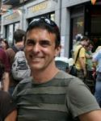

Erik van Lennep has over 30 years experience in setting up innovative and effective collaborative projects with high social return in the USA and Ireland. His consultative expertise has focused upon sustainable development: e.g. multicultural inclusion, cross sectoral collaboration, awareness building and communication, environmental impacts, restoration ecology, innovation, planning and design.
He worked from 2001-2007 with Sustainable Ireland Cooperative Society Ltd. The Cooperative maintains an all-island directory of sustainable goods and services providers, and was set up to address the need of networking the sustainability movement on a national scale, as well as promoting awareness and attitude change to further the uptake of sustainability.
Erik has been responsible for development of a number of key programmes of the Cooperative including the LEONARDO based training programme in sustainability. He is a co-founder of the Cooperative's "Cultivate Centre for Sustainable Living" in Dublin.
Erik works closely with Dublin City Council in producing relevant training events for City Council members and employees, with a special focus upon planning and urbanisation, multicultural inclusion, cross sectoral communication and collaboration, waste management and recycling, and youth empowerment. In 2006, he created and produced Dublin's first multicultural street festival, attracting some 15,000 people to participate in a day-long celebration embracing Dublin's diversity. In 2008, Erik van Lennep and Sinead Finn (as TEPUI) produced a policy document for Dublin City Council's strategy to implement Green Roofs as a part of the city development plan.
He has worked closely with British Council Ireland to produce a conference on Zero Carbon Cities in June 2006, and in October 2006 a conference and international exhibition on sustainable product design. He as well works with the National Partnership for Sustainable Development (COMHAR), consults the local and national Green Party on policy formation related to Sustainable Development, and the Department of Foreign Affairs committee on Education for Sustainable Development.
Prior to coming to Ireland he was co-founder of the international Rainforest Action Network, San Francisco, and founding director of the Arctic to Amazonia Alliance, a global human rights initiative for tribal peoples which he directed for 12 years, and has been credited with bringing Indigenous Peoples' issues onto the agenda of environmental NGOs. Erik van Lennep was a consultant to the Forest Stewardship Council, and the Smart Wood certification scheme as they drew up their first position statements, and is responsible for the inclusion of language which supports the rights of local communities, cultures and economies tied to the forests being certified. He has written policy for US Senator Patrick Leahy, Vermont, for inclusion in various agriculture bills, with respect to impacts of US policy on tropical forests and their peoples. Erik has consulted and worked closely with a number of international organisations over the years, including Conservation International, Rainforest Alliance, Experiment in International Living, MacArthur Foundation, National Wildlife Federation, the World Uranium Hearings, Indigenous Environmental Network and the International Rivers Network.
Erik van Lennep holds a Masters Degree in Sustainable Landscape Design, Land Use Planning and Environmental Restoration; and a Third Level degree in Plant Breeding.